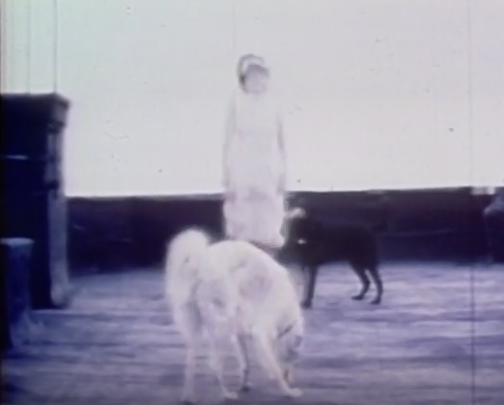

September 2026

I had to decide whether I wanted to emphasize the material conditions of writing.. Or to transcend...
some mix between intentionality & chance & dumb repetition
struggling for legitimacy and that becomes the whole thing
In "Pulse" there's this computer program, white dots against a black screen. The further the dots drift apart the more they're drawn together,
and when they meet, they destroy each other.
I pulled the Ace of Wands which has something to do with power and also my humiliation. Sancitity
of both. I have to believe in my own humiliation, which I forgot about, and now I'm being pressed to remember. Against the hulking fact of it.
An image of The Poet writing under the eye of a tarot card, maybe Strength, no Temperance --> "This is what pouring looks like"